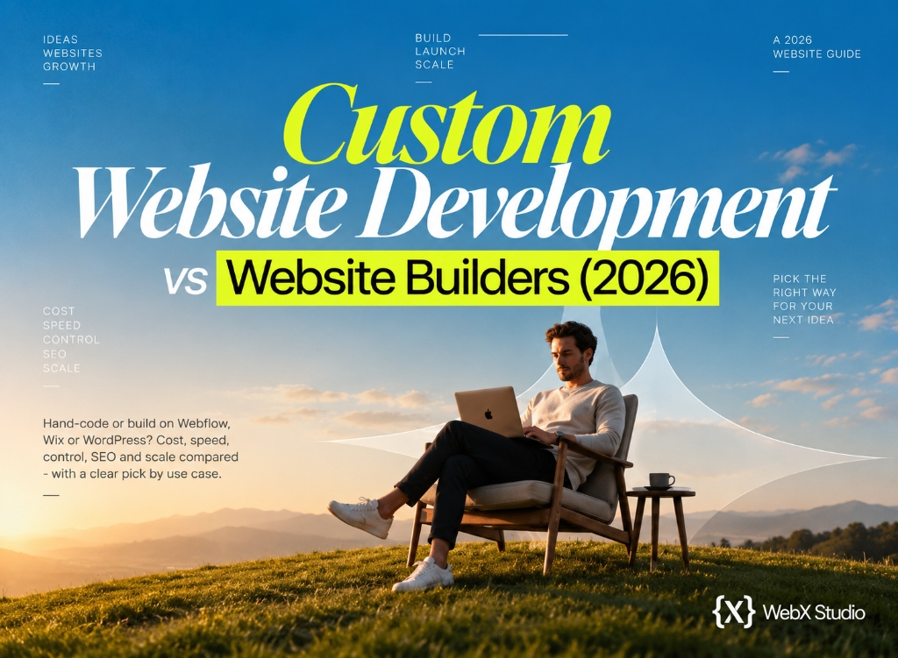

Custom website development vs website builders
Should you hand-code a custom website or build on a platform like Webflow, Wix or WordPress? Here’s an honest comparison across cost, speed, control, SEO and scale - and a clear recommendation for each kind of project.

It’s one of the first big decisions in any project: build a custom website from scratch, or use a website builder like Webflow, Wix, Squarespace or WordPress? The internet is full of absolutist takes - “custom is always better,” “no-code is the future” - and both are wrong. The right answer depends entirely on what you’re building.
At Web{X} Studio we build both custom and no-code, so we’ve no axe to grind. Here’s the honest comparison.
For most marketing, business and content websites, a professionally built no-code platform (like Webflow) is faster, cheaper and just as good. For complex apps, SaaS and bespoke systems, custom development wins. Match the tool to the job.
Head-to-head comparison
| Custom development | Website builder | |
|---|---|---|
| Flexibility | Unlimited | High (within the platform) |
| Time to launch | Slower | Faster |
| Upfront cost | Higher | Lower |
| Ongoing editing | Often needs a developer | Easy, visual, self-serve |
| Performance / SEO | Excellent (if done well) | Excellent on modern platforms |
| Scalability | Unlimited | Good, with some ceilings |
| Best for | Web apps, SaaS, bespoke | Marketing, business, blogs, ecommerce |
Where custom development wins
Choose custom development when your project needs:
- Complex logic or real-time data - dashboards, SaaS features, live inventory.
- Deep integrations - bespoke APIs, custom back-ends, unusual workflows.
- Full control of the codebase - no platform limits or lock-in.
- Unique interactions that go beyond what a platform natively supports.
These are typically web applications and large-scale products - see types of website development for where each fits.
Not sure which is right for your project?
Tell us what your site needs to do and we’ll recommend custom or no-code honestly - then build it, either way. Clear quote within two business days.
Get an honest recommendationWhere website builders win
Modern platforms have closed the quality gap dramatically. A professionally built Webflow or Framer site is fast, clean-coded, SEO-friendly and passes Core Web Vitals - while being far quicker and cheaper to build, and easy for you to edit afterwards. For marketing sites, business websites, blogs and lighter ecommerce, that’s usually the smarter investment.
The old myth that “builders are bad for SEO” is outdated. Poor SEO comes from how a site is built and what’s on it - not from the platform. A cheap drag-and-drop template can be slow and bloated, but that’s a quality problem, not a no-code problem.
The debate isn’t “custom vs no-code” - it’s “what does this specific project actually need?”
A simple decision rule
- Is it mainly content, marketing or a standard store? → A professional no-code build. Faster, cheaper, easy to maintain.
- Does it have logins, dashboards, complex data or custom logic? → Custom development.
- Somewhere in between? → A hybrid - no-code front, custom back-end, or a headless setup.
The takeaway
Custom development and website builders aren’t rivals - they’re tools for different jobs. The mistake isn’t choosing one; it’s choosing based on hype instead of need. Define what your website must do, and the right build almost picks itself. If you’re unsure, start with what website development is and what a full service includes.